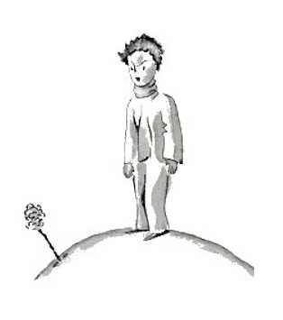
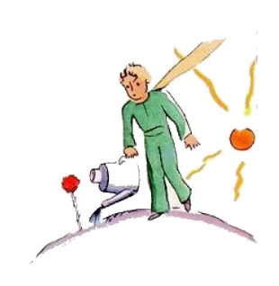
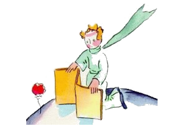
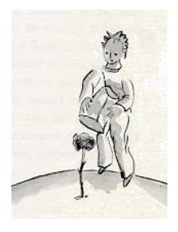

8
Bentost yo devet conossentar plu bon ti ta flor. Sur li planete del litt prince hat existet flores ja sempre, tre simplic queles es format ex un unic circul de petales; ili ne ludet un grand rol e ne trublat alquí. Ili comensat brilliar in un matine in li herbe e extintet se in li véspere. Ma un die ti ta flor hat inradicat se ex un seme, deo save de u, e li litt prince hat survigilat tre exactmen ti gérmine, quel ne esset simil al altri gérmines. It vell posser devenir un nov specie del baobab-árbor. Ma li arbuste cessat bentost crescer e comensat formar un flor. Li litt prince, qui esset present durant li developament de un gigantic burgeon, sentit certmen, que it deve nascer ex it un magnific fenomen, ma li flor ne successat preparar se in su verdi cámera a su bellitá. It selectet su color con cuida, it vestit se lentmen, ordinat su petales un pos li altri. It ne volet aparir ex li suol totmen frossat quam li flores del papavre. It ne volet aparir plu tost til it esset in li plen ornate de su bellitá. Nu! It volet pleser. Pro to su misteriosi toilette hat durat dies e dies. Ma tande in un matine exactmen durant li hor del ascension del sole, it hat revelat se.

E it, quel hat laborat con un tal precision, dit hiant:
"Ah! Yo ha apen avigilat me ... Yo demanda pardon ... Yo es ancor tre frossat ..."
Tande li litt prince ne posset celar su entusiasme plu:
"Quant bell vu es!"
"Ca ne?", li flor respondet dulcimen. "E yo nascet in li sam moment quam li sole."
Li litt prince certmen divinat que it ne esset tre modest, ma it esset tant ravissent!
"Yo pensa que it es li témpor por dejunear," it ha adjuntet bentost. "Esque vu vell esser tant benevolent pensar a me?"
Li litt prince hat aportat totmen confuset un cruche por versar con frisc aqua e il hat versat li flor.

Talmen it hat vexat le un poc per su timid vanitá. Un die, quande it parlat pri su quar spines, it hat dit al prince:
"Ili solmen mey venir, li tigres con lor griffes!"
"It ne hay tigres sur mi planete," li litt prince hat objectet, "e li tigres anc ne manja herbe."
"Yo ne es herbe", li flor hat respondet mildmen.
"Pardona me ..."

"Yo ne time li tigres, ma yo time li aer-currente. Esque vu ne have un para-vente?"
Timore pro li aer-currente? To es mal perspectives por un plante, li litt prince hat constatat. Ti flor es tre complicat ...
"In li véspere vu va metter me in un vitrine. It es tre frigid che vu. To ne es bon arangeat. Ta de u yo veni ..."
Ma it hat interruptet se. It hat venit in li forme de un grane de seme. It ne hat posset saver alquó pri li altri mundes. Ahontat que it hat lassat se capter in un tal simplic mentie, it hat tussat duvez o trivez por metter li litt prince in li ínjusticie.
"Li para-vente ... ?"
"Yo volet it just aportar, ma vu parlat con me!"

Tande it hat fortiat se self denov tussar por crear in il remorses.
Talmen li litt prince hat comensat dubitar rapidmen pri it, malgré su sinceri amore. Il hat prendet li trivial paroles del flor tre seriosimen e devenit tre ínfelici.
"Yo ne vell har escutat a it", il in un die confesset a me. "On ne deve escutar a flores, on deve regardar e inhalar les. Li mie plenat li planete con odore, ma yo ne posset devenir joyosi pri it. Ti raconta pri li griffes, quel ha iritat me tant, vell hat tuchar me plu mult."
Il confidet ancor a me.
"Tande yo ne ha posset comprender to. Yo vell har judicat it secun su actiones e ne secun su paroles. It odorat e ardet por me. Yo nequande vell har devet fugir! Yo vell har devet vider que detra omni su artificies it celat su tendresse. Li flores es tant contradictatori! Ma yo esset tro yun por posser amar it."